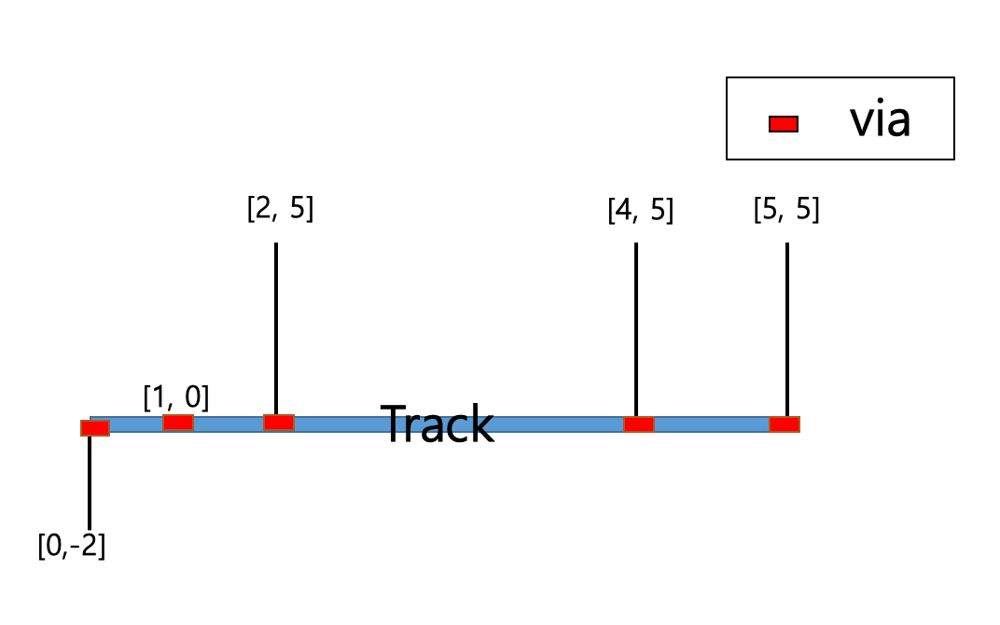

Design class¶
- class laygo2.object.database.Design(name, params=None, elements=None, libname=None)[source]¶
Bases:
laygo2.object.database.BaseDatabaseDesign class implements the design management function.
Notes
Reference in Korean: Design 클래스는 디자인 관리 기능을 구현한다.
Public Data Attributes:
get design bbox which is union of instances.bbox
attribute str: Library name of Design object.
attribute str: Cell name of Design object.
attribute dict: Dictionary containing Rectangle object affiliated with Design object.
attribute dict: Dictionary having the collection of Pin objects affiliated with Design object.
attribute dict: Dictionary containing Text objects affiliated with Design object.
attribute dict: Dictionary containing Instance objects affiliated with Design object.
attribute dict: Dictionary containing VirtualInstance objects affiliated with Design object.
Inherited from
BaseDatabaseattribute str: BaseDatabase object name.
attribute dict or None: Dictionary containing parameters of BaseDatabase object.
attribute dict: Dictionary having objects.
attribute int: A unique number used as the name of an unnamed object belonging to the database.
attribute list: Keys of elements.
Public Methods:
set_libname(val)set_cellname(val)__iter__()Iterator function.
__init__(name[, params, elements, libname])Constructor function of Design class.
append(item)Return the summary of the object information.
place(inst, grid, mn)Place the instance on the abstract coordinate mn, on the abstract grid.
route(grid, mn[, direction, via_tag])Create wire object(s) for routing.
via(grid, mn[, params])Create Via object(s) on abstract grid.
route_via_track(grid, mn, track[, via_tag])Perform routing on the specified track with accessing wires to mn.
pin(name, grid, mn[, direction, netname, params])Create a Pin object over the abstract coordinates specified by mn, on the specified routing grid.
export_to_template([libname, cellname])Generate NativeInstanceTemplate object corresponding to Design object.
get_matched_rects_by_layer(layer)Return a list containing physical objects matched with the layer input in Design object.
Inherited from
BaseDatabaseitems()key/object pair of elements.
__getitem__(pos)Return the object corresponding to the key.
__setitem__(key, item)Add key/object pair.
append(item)__iter__()Iterator function.
__str__()Return str(self).
Return the summary of the object information.
__init__(name[, params, elements, libname])Constructor function of Design class.
- __init__(name, params=None, elements=None, libname=None)[source]¶
Constructor function of Design class.
- Parameters
- Return type
laygo2.object.BaseDatabase
Examples
>>> dsn = laygo2.object.Design(name='dsn', libname="testlib") >>> print(dsn) <laygo2.object.database.Design object> name: dsn, params: None elements: {} libname:testlib rects:{} paths:{} pins:{} texts:{} instances:{} virtual instances:{}
Notes
Reference in Korean: Design 클래스의 생성자 함수. 파라미터 name(str): Design 객체의 이름 params(dict): Design 객체의 parameters [optional] elements(dict): Design 객체의 elements [optional] 반환값 laygo2.object.BaseDatabase 참조 없음
- export_to_template(libname=None, cellname=None)[source]¶
Generate NativeInstanceTemplate object corresponding to Design object.
- Parameters
- Returns
laygo2.NativeInstanceTemplate
- Return type
The generated template object.
Examples
>>> dsn = laygo2.object.Design(name='dsn', libname="testlib") >>> rect0 = laygo2.object.Rect(xy=[[0, 0], [100, 100]], layer=['M1', 'drawing’]……) >>> pin0 = laygo2.object.Pin(xy=[[0, 0], [100, 100]], layer=['M1', 'pin’]……) >>> inst0 = laygo2.object.Instance(name='I0', xy=[100, 100]……) >>> vinst0 = laygo2.object.physical.VirtualInstance(name='VI0’, ……) >>> text0 = laygo2.object.physical.Text(xy=[[ 0, 0], [100,100 ]], layer=['text', 'drawing’]……) >>> dsn.append(rect0) >>> dsn.append(pin0) >>> dsn.append(inst0) >>> dsn.append(vinst0) >>> dsn.append(text0) >>> print(dsn.export_to_template()) <laygo2.object.template.NativeInstanceTemplate object> name: dsn, class: NativeInstanceTemplate, bbox: [[100, 100], [800, 700]], pins: {'NoName_0': <laygo2.object.physical.Pin object>}Notes
Reference in Korean: Design 객체에 해당하는 NativeInstanceTemplate 객체 생성. 파라미터 없음 반환값 laygo2.NativeInstanceTemplate
- get_matched_rects_by_layer(layer)[source]¶
Return a list containing physical objects matched with the layer input in Design object.
- Parameters
layer (list) – The layer information. Format is [name, purpose].
- Returns
list
- Return type
The list containing the matched Physical objects.
Examples
>>> dsn = laygo2.object.Design(name='dsn', libname="testlib") >>> rect0 = laygo2.object.Rect(xy=[[0, 0], [100, 100]], layer=[‘M1’, ‘drawing’]……) >>> pin0 = laygo2.object.Pin(xy=[[0, 0], [100, 100]], layer=[‘M1’, ‘pin’]……) >>> inst0 = laygo2.object.Instance(name=‘I0’, xy=[100, 100]……) >>> vinst0_pins[‘in’] = laygo2.object.physical.Pin(xy=[[0, 0], [10, 10]], layer=[‘M1’,’drawing’]……) >>> vinst0_pins[‘out’] = laygo2.object.physical.Pin(xy=[[90, 90], [100, 100]], layer=[‘M1’, drawing’] ……) >>> vinst0 = laygo2.object.physical.VirtualInstance(name=‘VI0’, ……) >>> text0 = laygo2.object.physical.Text(xy=[[ 0, 0], [100,100 ]], layer=[‘text’, ‘drawing’]……) >>> dsn.append(rect0) >>> dsn.append(pin0) >>> dsn.append(inst0) >>> dsn.append(vinst0) >>> dsn.append(text0) >>> print( dsn.get_matchedrects_by_layer( [“M1”, “drawing”] ) [<laygo2.object.physical.Rect object>, <laygo2.object.physical.Pin object>, <laygo2.object.physical.Pin object>, <laygo2.object.physical.Rect object>]
Notes
Reference in Korean: 주어진 layer와 일치되는 Physical object 갖는 list 반환. 파라미터 layer purpose pair(list): 레이어 정보 반환값 list: 매치되는 Physical object를 담고 있는 list 참조 없음
- items()¶
key/object pair of elements.
- Parameters
None –
- Return type
dict_items
Examples
>>> base = laygo2.object.BaseDatabase(name='mycell’) >>> rect0 = laygo2.object.Rect(name='R0’ ……) >>> rect1 = laygo2.object.Rect(xy=……) >>> pin0 = laygo2.object.Pin(xy=……) >>> inst0 = laygo2.object.Instance(name='I0', xy=[100, 100] ……) >>> base.append(rect0) >>> base.append(rect1) >>> base.append(pin0) >>> base.append(inst0) >>> print(base.items()) dict_items([('R0', <laygo2.object.physical.Rect object>), ('NoName_0', <laygo2.object.physical.Rect object>), ('NoName_1', <laygo2.object.physical.Pin object>), ('I0', <laygo2.object.physical.Instance object>)])Notes
Reference in Korean: elements의 key/object 짝 출력. 파라미터 없음 반환값 dict_items 참조 없음
- pin(name, grid, mn, direction=None, netname=None, params=None)[source]¶
Create a Pin object over the abstract coordinates specified by mn, on the specified routing grid.
- Parameters
name (str) – Pin name.
mn (numpy.ndarray) – Abstract coordinates for generating Pin.
direction (str, optional.) – Direction.
netname (str, optional.) – Net name of Pin.
params (dict, optional) – Pin attributes.
- Returns
laygo2.physical.Pin
- Return type
The generated pin object.
Examples
>>> dsn = Design(name='mycell', libname="testlib") >>> mygrid = grids[“routing_23_cmos”] >>> mn = [[0, 0], [10, 10]] >>> pin = dsn.pin(name="pin", grid=mygrid, mn=mn) >>> print("pin") <laygo2.object.physical.Pin object> name: pin, class: Pin, xy: [[0, 5], [300, 265]]……Notes
Reference in Korean: pin 생성함수. 파라미터 name(str): Pin 이름. mn(numpy.ndarray): Pin을 생성할 abstract 좌표. direction(str): 방향 [optional]. netname(str): Pin의 net이름 [optional]. params(dict): Pin 속성 [optional]. 반환값 laygo2.physical.Pin: Pin object.
- place(inst, grid, mn)[source]¶
Place the instance on the abstract coordinate mn, on the abstract grid.
- Parameters
inst (laygo2.object.physical.Instance or laygo2.object.physical.VirtualInstance) – The instance to be placed.
grid (laygo2.object.grid.PlacementGrid) – The placement grid where the instance is placed on.
mn (numpy.ndarray or list) – The abstract coordinate value [m, n] to place the instance.
- Returns
The placed instance.
- Return type
laygo2.object.physical.Instance or laygo2.object.physical.VirtualInstance
Examples
>>> dsn = Design(name='mycell', libname="testlib") >>> g1_x = laygo2.object.grid.OneDimGrid(name='xgrid', scope=[0, 20], elements=[0]) >>> g1_y = laygo2.object.grid.OneDimGrid(name='ygrid', scope=[0, 100], elements=[0]) >>> g2 = laygo2.object.grid.PlacementGrid(name='test', vgrid=g1_x, hgrid=g1_y) >>> inst0= laygo2.object.physical.Instance(name="I0", xy=[100, 100], transform=‘R0’……) >>> print(inst0.xy) [100, 100] >>> dsn.place(inst=inst0, grid=g2, mn=[10,10]) >>> print(inst0.xy) [200, 1000]
Notes
Reference in Korean: 인스턴스를 grid위 추상 좌표 mn에 배치함. 파라미터 inst(laygo2.physical.instance): 배치할 인스턴스 mn(numpy.ndarray or list): 인스턴스를 배치할 추상좌표 반환값 laygo2.physical.instance: 좌표가 수정된 인스턴스 참조 없음
- route(grid, mn, direction=None, via_tag=None)[source]¶
Create wire object(s) for routing.
- Parameters
grid (laygo2.object.grid.RoutingGrid) – The placement grid where the wire is placed on.
mn (list(numpy.ndarray)) – The list containing two or more mn coordinates to be connected.
direction (str, optional.) – None or “vertical” or “horizontal”. The direction of the routing object.
via_tag (list(Boolean), optional.) – The list containing switches deciding whether to place via at the edges.
- Returns
The generated routing object(s). Check the example code in laygo2.object.grid.RoutingGrid.route for details.
- Return type
Examples
>>> dsn = Design(name='mycell', libname="testlib") >>> mygrid = grids[“routing_23_cmos”] >>> mn_list = [[0, -2], [0, 1], [2, 1], [5,1] ] >>> route = dsn.route(grid=mygrid, mn=mn_list, via_tag=[True, None, True, True]) >>> print(route) [<laygo2.object.physical.VirtualInstance object>, <laygo2.object.physical.Rect object>, <laygo2.object.physical.Rect object>, <laygo2.object.physical.VirtualInstance object>, <laygo2.object.physical.Rect object>, <laygo2.object.physical.VirtualInstance object>]

See also
Notes
Reference in Korean: 추상 좌표 위에 라우팅을 수행 하는 함수. 파라미터 mn(list(numpy.ndarray)): 배선을 수행할 2개 이상의 mn 좌표를 담고 있는 list. direction(str): None or “vertical”; path의 방향을 결정 (수평 or 수직) [optional]. via_tag(list(Boolean)): Path에 via를 형성 할지를 결정하는 switch들을 담고 있는 list [optional]. 반환값 list: 생성된 routing object들을 담고 있는 list.
- route_via_track(grid, mn, track, via_tag=[None, True])[source]¶
Perform routing on the specified track with accessing wires to mn.
- Parameters
mn (list(numpy.ndarray)) – list containing coordinates of the points being connected through a track
track (numpy.ndarray) – list containing coordinate values and direction of a track. Vertical tracks have [v, None] format, while horizontal tracks have [None, v] format (v is the coordinates of the track).
- Returns
The list containing the generated routing objects; The last object corresponds to the routing object on the track.
- Return type
Examples
>>> r23=grids[“routing_23_cmos”] >>> mn_list = [[0, -2], [1, 0], [2, 5], [3, 4], [4, 5], [5, 5]] >>> track = r23.route_via_track(mn=mn_list, track=[None,0]) >>> print(track) [[<laygo2.object.physical.Rect object>, <laygo2.object.physical.VirtualInstance object>], <laygo2.object.physical.VirtualInstance object>, [<laygo2.object.physical.Rect object>, <laygo2.object.physical.VirtualInstance object>], [<laygo2.object.physical.Rect object>, <laygo2.object.physical.VirtualInstance object>], [<laygo2.object.physical.Rect object>, <laygo2.object.physical.VirtualInstance object>], [<laygo2.object.physical.Rect object>, <laygo2.object.physical.VirtualInstance object>], <laygo2.object.physical.Rect object>]
Notes
Reference in Korean: wire 라우팅 함수, track을 기준점으로 routing을 진행한다. 파라미터 track(numpy.ndarray): track의 좌표값과 방향을 담고 있는 list. 수직 트랙일 경우 [v, None], 수평 트랙일 경우 [None, v]의 형태를 가지고 있다 (v는 track의 좌표값). mn(list(numpy.ndarray)): track을 통해 연결될 지점들의 좌표를 담고 있는 list. 반환값 list: 생성된 routing object들을 담고 있는 list. 마지막 object가 track위의 routing object에 해당.
- via(grid, mn, params=None)[source]¶
Create Via object(s) on abstract grid.
- Parameters
mn (list(numpy.ndarray)) – Abstract coordinate(s) that specify location(s) to insert via(s).
- Returns
The list containing the generated via objects.
- Return type
Examples
>>> dsn = Design(name='mycell', libname="testlib") >>> mygrid=grids[“routing_23_cmos”] >>> mn_list = [[0, -2], [1, 0], [2, 5]] >>> via = dsn.via(grid=mygrid, mn=mn_list) >>> print(via) [<laygo2.object.physical.VirtualInstance object>, <laygo2.object.physical.VirtualInstance object>, <laygo2.object.physical.VirtualInstance object>]

See also
Notes
Reference in Korean: via 생성함수. 파라미터 mn(list(numpy.ndarray)): via를 생성할 mn좌표. 복수 개 입력 가능. 반환값 list(physical.PhysicalObject)): 생성된 via object들을 담고 있는 list.
- property bbox¶
get design bbox which is union of instances.bbox
- property cellname¶
attribute str: Cell name of Design object.
Examples
>>> dsn = laygo2.object.Design(name='dsn', libname="testlib") >>> rect0 = laygo2.object.Rect(xy=[[0, 0], [100, 100]], layer=['M1', 'drawing’]……) >>> pin0 = laygo2.object.Pin(xy=[[0, 0], [100, 100]], layer=['M1', 'pin’]……) >>> inst0 = laygo2.object.Instance(name='I0', xy=[100, 100]……) >>> vinst0 = laygo2.object.physical.VirtualInstance(name='VI0’, ……) >>> text0 = laygo2.object.physical.Text(xy=[[ 0, 0], [100,100 ]], layer=['text', 'drawing’]……) >>> dsn.append(rect0) >>> dsn.append(pin0) >>> dsn.append(inst0) >>> dsn.append(vinst0) >>> dsn.append(text0) >>> print(dsn.cellname) “dsn”
Notes
Reference in Korean: str: Design 객체의 셀 이름.
- elements = None¶
attribute dict: Dictionary having objects.
Examples
>>> base = laygo2.object.BaseDatabase(name='mycell’) >>> rect0 = laygo2.object.Rect(name='R0’ ……) >>> rect1 = laygo2.object.Rect(xy=……) >>> pin0 = laygo2.object.Pin(xy=……) >>> inst0 = laygo2.object.Instance(name='I0', xy=[100, 100] ……) >>> base.append(rect0) >>> base.append(rect1) >>> base.append(pin0) >>> base.append(inst0) >>> print(base.elements()) {'R0': <laygo2.object.physical.Rect object>, 'NoName_0': <laygo2.object.physical.Rect object>, 'NoName_1': <laygo2.object.physical.Pin object>, 'I0': <laygo2.object.physical.Instance object>}Notes
Reference in Korean: BaseDatabase 객체의 구성 요소를 담고 있는 Dictionary.
- instances = None¶
attribute dict: Dictionary containing Instance objects affiliated with Design object.
Examples
>>> dsn = laygo2.object.Design(name='dsn', libname="testlib") >>> rect0 = laygo2.object.Rect(xy=[[0, 0], [100, 100]], layer=['M1', 'drawing’]……) >>> pin0 = laygo2.object.Pin(xy=[[0, 0], [100, 100]], layer=['M1', 'pin’]……) >>> inst0 = laygo2.object.Instance(name='I0', xy=[100, 100]……) >>> vinst0 = laygo2.object.physical.VirtualInstance(name='VI0’, ……) >>> text0 = laygo2.object.physical.Text(xy=[[ 0, 0], [100,100 ]], layer=['text', 'drawing’]……) >>> dsn.append(rect0) >>> dsn.append(pin0) >>> dsn.append(inst0) >>> dsn.append(vinst0) >>> dsn.append(text0) >>> print(dsn.instances) {'I0': <laygo2.object.physical.Instance object>}Notes
Reference in Korean: dict: Design 객체에 소속된 Instance 객체들을 갖고 있는 dictionary.
- property keys¶
attribute list: Keys of elements.
Examples
>>> base = laygo2.object.BaseDatabase(name='mycell’) >>> rect0 = laygo2.object.Rect(name='R0’ ……) >>> rect1 = laygo2.object.Rect(xy=……) >>> pin0 = laygo2.object.Pin(xy=……) >>> inst0 = laygo2.object.Instance(name='I0', xy=[100, 100] ……) >>> base.append(rect0) >>> base.append(rect1) >>> base.append(pin0) >>> base.append(inst0) >>> print(base.keys()) ['R0', 'NoName_0', 'NoName_1', 'I0']
Notes
Reference in Korean: list: BaseDatabase 객체의 구성 요소를 담고 있는 Dictionary.
- property libname¶
attribute str: Library name of Design object.
Examples
>>> dsn = laygo2.object.Design(name='dsn', libname="testlib") >>> rect0 = laygo2.object.Rect(xy=[[0, 0], [100, 100]], layer=['M1', 'drawing’]……) >>> pin0 = laygo2.object.Pin(xy=[[0, 0], [100, 100]], layer=['M1', 'pin’]……) >>> inst0 = laygo2.object.Instance(name='I0', xy=[100, 100]……) >>> vinst0 = laygo2.object.physical.VirtualInstance(name='VI0’, ……) >>> text0 = laygo2.object.physical.Text(xy=[[ 0, 0], [100,100 ]], layer=['text', 'drawing’]……) >>> dsn.append(rect0) >>> dsn.append(pin0) >>> dsn.append(inst0) >>> dsn.append(vinst0) >>> dsn.append(text0) >>> print(dsn.libname) “testlib”
Notes
Reference in Korean: str: Design 객체의 라이브러리 이름.
- name = None¶
attribute str: BaseDatabase object name.
Examples
>>> base = laygo2.object.BaseDatabase(name='mycell’) >>> base.name “mycell”
Notes
Reference in Korean: str: BaseDatabase 이름.
- noname_index = 0¶
attribute int: A unique number used as the name of an unnamed object belonging to the database.
Examples
>>> base = laygo2.object.BaseDatabase(name='mycell’) >>> rect0 = laygo2.object.Rect(name='R0’ ……) >>> base.append(rect0) >>> print(base.noname_index) 0 >>> rect1 = laygo2.object.Rect(xy=……) >>> base.append(rect1) >>> print(base.noname_index) 1
Notes
Reference in Korean: int: BaseDatabase의 소속 객체들 중 이름이 정해지지 않은 객체의 이름을 사용할 때 부여되는 고유 번호.
- params = None¶
attribute dict or None: Dictionary containing parameters of BaseDatabase object.
Examples
>>> base = laygo2.object.BaseDatabase(name='mycell’) >>> base.params None
Notes
Reference in Korean: dict or None: BaseDatabase의 속성.
- paths = None¶
- pins = None¶
attribute dict: Dictionary having the collection of Pin objects affiliated with Design object.
Examples
>>> dsn = laygo2.object.Design(name='dsn', libname="testlib") >>> rect0 = laygo2.object.Rect(xy=[[0, 0], [100, 100]], layer=['M1', 'drawing’]……) >>> pin0 = laygo2.object.Pin(xy=[[0, 0], [100, 100]], layer=['M1', 'pin’]……) >>> inst0 = laygo2.object.Instance(name='I0', xy=[100, 100]……) >>> vinst0 = laygo2.object.physical.VirtualInstance(name='VI0’, ……) >>> text0 = laygo2.object.physical.Text(xy=[[ 0, 0], [100,100 ]], layer=['text', 'drawing’]……) >>> dsn.append(rect0) >>> dsn.append(pin0) >>> dsn.append(inst0) >>> dsn.append(vinst0) >>> dsn.append(text0) >>> print(dsn.pins) {'NoName_0': <laygo2.object.physical.Pin object>}Notes
Reference in Korean: dict: Design 객체에 소속된 Pin 객체들을 갖고 있는 dictionary.
- rects = None¶
attribute dict: Dictionary containing Rectangle object affiliated with Design object.
Examples
>>> dsn = laygo2.object.Design(name='dsn', libname="testlib") >>> rect0 = laygo2.object.Rect(xy=[[0, 0], [100, 100]], layer=['M1', 'drawing’]……) >>> pin0 = laygo2.object.Pin(xy=[[0, 0], [100, 100]], layer=['M1', 'pin’]……) >>> inst0 = laygo2.object.Instance(name='I0', xy=[100, 100]……) >>> vinst0 = laygo2.object.physical.VirtualInstance(name='VI0’, ……) >>> text0 = laygo2.object.physical.Text(xy=[[ 0, 0], [100,100 ]], layer=['text', 'drawing’]……) >>> dsn.append(rect0) >>> dsn.append(pin0) >>> dsn.append(inst0) >>> dsn.append(vinst0) >>> dsn.append(text0) >>> print(dsn.rects) {'R0': <laygo2.object.physical.Rect object>}Notes
Reference in Korean: dict: Design 객체에 소속된 Rect 객체들을 갖고 있는 dictionary.
- texts = None¶
attribute dict: Dictionary containing Text objects affiliated with Design object.
Examples
>>> dsn = laygo2.object.Design(name='dsn', libname="testlib") >>> rect0 = laygo2.object.Rect(xy=[[0, 0], [100, 100]], layer=['M1', 'drawing’]……) >>> pin0 = laygo2.object.Pin(xy=[[0, 0], [100, 100]], layer=['M1', 'pin’]……) >>> inst0 = laygo2.object.Instance(name='I0', xy=[100, 100]……) >>> vinst0 = laygo2.object.physical.VirtualInstance(name='VI0’, ……) >>> text0 = laygo2.object.physical.Text(xy=[[ 0, 0], [100,100 ]], layer=['text', 'drawing’]……) >>> dsn.append(rect0) >>> dsn.append(pin0) >>> dsn.append(inst0) >>> dsn.append(vinst0) >>> dsn.append(text0) >>> print(dsn.texts) {'NoName_1': <laygo2.object.physical.Text object>}Notes
Reference in Korean: dict: Design 객체에 소속된 Text 객체들을 갖고 있는 dictionary.
- virtual_instances = None¶
attribute dict: Dictionary containing VirtualInstance objects affiliated with Design object.
Examples
>>> dsn = laygo2.object.Design(name='dsn', libname="testlib") >>> rect0 = laygo2.object.Rect(xy=[[0, 0], [100, 100]], layer=['M1', 'drawing’]……) >>> pin0 = laygo2.object.Pin(xy=[[0, 0], [100, 100]], layer=['M1', 'pin’]……) >>> inst0 = laygo2.object.Instance(name='I0', xy=[100, 100]……) >>> vinst0 = laygo2.object.physical.VirtualInstance(name='VI0’, ……) >>> text0 = laygo2.object.physical.Text(xy=[[ 0, 0], [100,100 ]], layer=['text', 'drawing’]……) >>> dsn.append(rect0) >>> dsn.append(pin0) >>> dsn.append(inst0) >>> dsn.append(vinst0) >>> dsn.append(text0) >>> print(dsn.virtual_instances) virtual_instnaces {'VI0': <laygo2.object.physical.VirtualInstance object>}Notes
Reference in Korean: dict: Design 객체에 소속된 VirtualInstance 객체들을 갖고 있는 dictionary.
{kind=link}